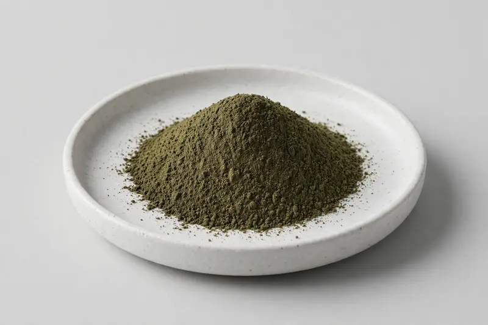

Curry Leaf — leaf botanical for culinary and metabolic-positioned formulations.

Overview
Curry leaf extract is produced from Murraya koenigii leaf and is most often standardized around mahanimbine, the carbazole alkaloid marker buyers reference. Interest spans culinary ingredient development and metabolic-positioned supplement formulations. From Xi'an, we operate as a trading company sourcing through partner producers, confirming mahanimbine grade feasibility and documentation after receiving the buyer's target specification.
Specifications below reflect commonly requested options in the market — not a stock list. Share your target spec and we'll confirm exactly what we can supply, honestly.
| Specification | Details |
|---|---|
| Botanical identity | Curry leaf extract powder (Murraya koenigii) |
| Marker compound | Commonly requested spec grades: mahanimbine content; actual specs confirmed on inquiry |
| Appearance | Dark green to greenish-brown fine powder |
| Analytical methods | Methods referenced in buyer specifications: HPLC |
| Mesh size | Typically 80–100 mesh (confirm per inquiry) |
| Testing | COA/TDS arranged on request; scope agreed per your spec |
Applications
Documentation
We don't claim in-house labs or certifications we don't hold. COA and TDS documents can be arranged on request, and testing scope is agreed against your specification before supply.
FAQ
Related products
Morus alba
Key marker: DNJ 1%
View specs →Citrus aurantium
Key marker: Synephrine 6-10%
View specs →Sodium hyaluronate (fermentation-derived)
Key marker: Cosmetic & food grades
View specs →Polygala tenuifolia
Key marker: Tenuifolin Content
View specs →Embelia ribes
Key marker: Embelin Content
View specs →Send your target spec and volumes — we'll respond with a tailored quotation.
Request a Quote